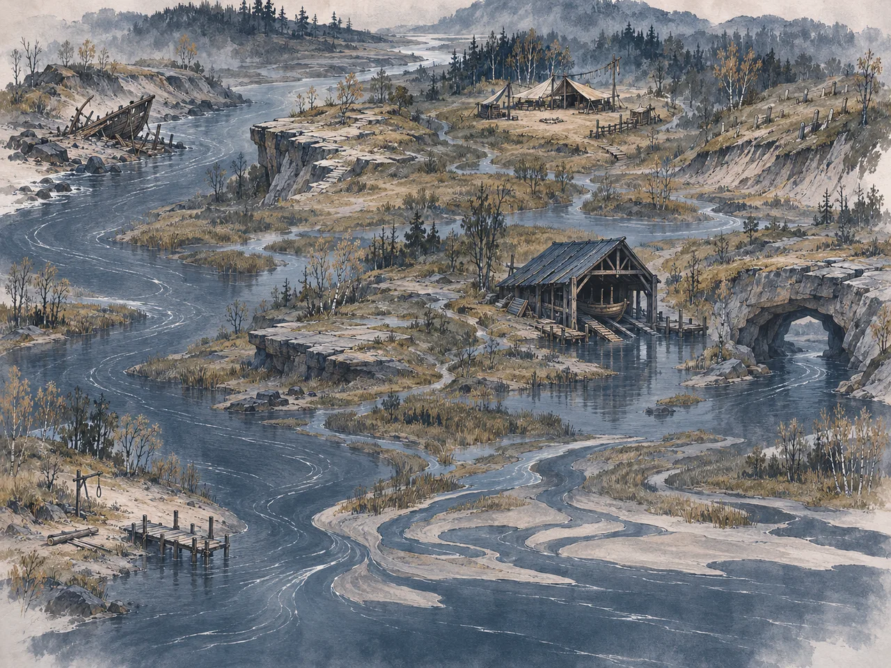
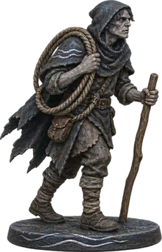

Последний перевозчик
Карты и фигурки ведущего
Игровой комплект
3 игрока · 4 игрока · 5 игроков · 6 игроков · 7 игроков
Карта кампании

Поля боя


Герои


Персонажи ведущего


Противники
 Дежурный Ильмы 4Дежурный Ильмы 2Дежурный Ильмы 1Дежурный Ильмы 3Дежурный Ильмы 5
Дежурный Ильмы 4Дежурный Ильмы 2Дежурный Ильмы 1Дежурный Ильмы 3Дежурный Ильмы 5

Перехватчик на карнизе 1Перехватчик на карнизе 3Перехватчик на карнизе 2Перехватчик на карнизе 4Перехватчик на карнизе 5 Удерживающий высадку 2Удерживающий высадку 1Удерживающий высадку 3Удерживающий высадку 4Удерживающий высадку 5
Удерживающий высадку 2Удерживающий высадку 1Удерживающий высадку 3Удерживающий высадку 4Удерживающий высадку 5